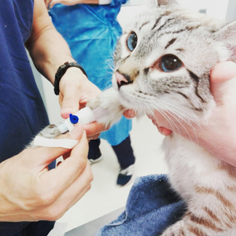
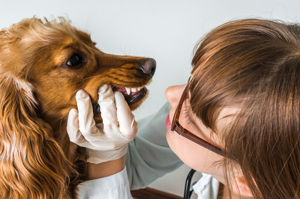
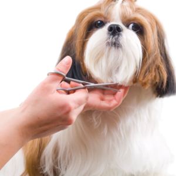

Consulta Veterinaria
La consulta general veterinaria, es la base para la prevención y detección de problemas en nuestros perros o gatos, sobretodo porque estos no nos pueden indicar sus problemas. ... En una consulta general veterinaria, el veterinario revisa los principales órganos y variables de la mascota.
Cirugia
La cirugía es una especialidad médica que utiliza técnicas manuales e instrumentales operativas en un paciente, con el objetivo de investigar o tratar enfermedades o lesiones. El objetivo de la cirugía es mejorar la función de los órganos y restaurar la salud. Al acto de realizar una cirugía se le puede llamar también procedimiento quirúrgico u operación, que puede ser efectuado a una persona o un animal. La duración dependerá del asunto a tratar, pudiendo ser de minutos a horas.
Dentista
La Odontología Veterinaria es una especialidad, que tiene como objetivo identificar y tratar enfermedades en la cavidad oral de las mascotas. Las patologías bucales y dentales en caninos y felinos son muy variadas y frecuentes siendo primarias propias de la boca o secundarias como consecuencia de enfermedades generales originadas en otras partes del organismos que manifiestan signos en la cavidad bucal.
Peluqueria
Los peluqueros caninos son profesionales especializados en higiene y estética que tienen como objetivo preservar la salud de las mascotas. No se trata solo de cumplir una función estética, sino de cuidar la higiene de la manera más óptima posible para ofrecerle mejores cuidados y mejorar su calidad de vida. En la estética canina no solo mejora el aspecto físico del animal, sino que existen también ciertas razones médicas.